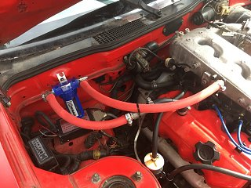

-
So Iâve read all 7 pages of the Pcv/catch can routing and discussion and i canât find a clear answer of how to route a catch can on our vgs
so i guess my real question is, is it better to get 2 catch cans (one for each side)- i donât mind cleaning/emptying 2 tanks
or a 4 -10an fitting catch can ( http://www.jegs.com/i/Vibrant-Perfor…SABEgJa_vD_BwE )
or would the Cusco oil catch tank on the zstore page work with out cars ( http://www.thezstore.com/page/TZS/PROD/10-2072 )
or do what careless did with his custom catch can -
I just T'd into the factory hose between the valve cover and the intake. That way it still flows just as Nissan intended it to just with a catch in the line.
Also I just used a water/air separator for air compressors as my catch can. They use a low micron copper filter which makes a great baffle and are only around $25. All you have to do is seal the fitting in the bottom of it.if you're gonna be dumb you gotta be tough -
Are you running a breather on the driver said valve cover ? Also it looks like your running -10an lines ? Thatâs looks pretty nice honestly lot simpler than i was expecting, and it works as intended?Originally posted by edizzle89 View Post -
I think it's 5/8" hose, and I had a breather on the other side but my setup was tuned for just MAP and didnt have a MAF. Not sure if pulling air not metered by the MAF would cause any issue.if you're gonna be dumb you gotta be tough -
Iâll try a catch can on the passenger side and breather on other and see what happens with nistuneOriginally posted by edizzle89 View Post -
Well, in each spot that a catch can would be, you can substitute a bmw oil separator (looks like a funnel with 2 tube inlets) and plumb the drain port to high on the oil pan.
no mess and no emptying.1984 GLL 300ZX NA to VG30ET Engine Swap Big Turbo
1987 Auto Rare Kouki Slicktop Velvet-Cake (NA2T in progress: parts sourced)

Copyright © 2006–. All rights reserved. Privacy Policy
Comment